Living Tamil Association for World Literature (LTAWL)
The 2016 Vishnupuram Literary Circle Award went to the writer Vannadasan, honoured over two crowded days of readings and discussion in Coimbatore that drew far more readers than anyone had planned for — translated and adapted from the original Tamil account.
The Circle settled on Vannadasan as the year's laureate as early as March 2016, but chose not to say so right away. Jeyamohan carried the news to him only after returning from a trip to Europe, asking him to accept the honour, and the decision itself was not made public until several months later, in September or October. The delay was deliberate: rather than let a single announcement stand in for the tribute, the organisers spent the intervening months keeping attention on the author's work, running two reader-writer meetings ahead of the event that brought roughly a hundred new readers into the fold.

The ceremony and its accompanying sessions were held on 24–25 December 2016 at the Gujarathi Bhavan in Coimbatore — a bigger hall than the Rajasthani Bhavan used in earlier years, chosen precisely because the organisers expected the crowd to grow. It still was not enough. By the first morning around 120 people had already arrived, and numbers climbed past 300 by the day of the ceremony itself; a nearby house known locally as the Doctor's Bungalow had to be pressed into service as overflow lodging, and the kitchen scrambled to stretch a planned hundred breakfast plates to cover more than 130.

The first day opened with Nanjil Nadan's session, mixing wit and literary scholarship into a talk that had the hall laughing between questions. Bharathi Mani followed with reflections on fifty years in modern theatre direction in Delhi, including his work alongside Ebrahim Alkazi, weighing both its successes and its disappointments. In the afternoon Ra. Murukan spoke to the more seasoned readers in the audience, fielding pointed questions on his own writing, while the storyteller Pava Sellathurai gave a dramatic reading of Bala's short story Honey, his account of a well being dug singled out by listeners as a highlight in itself.
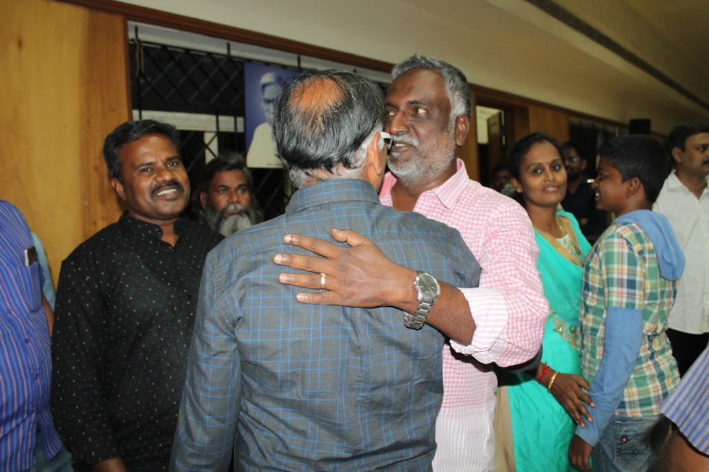
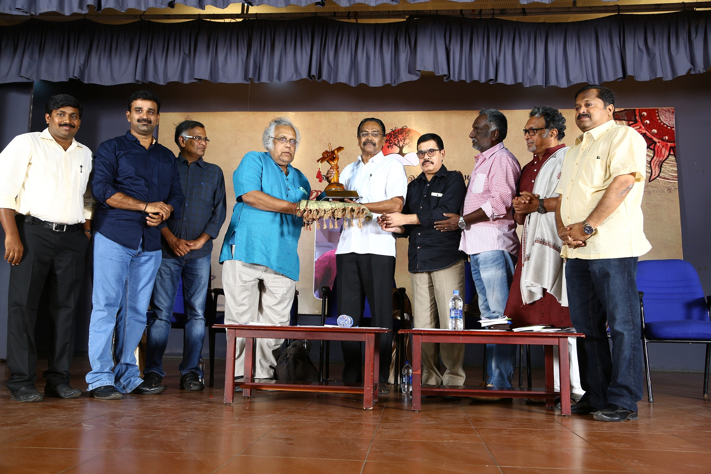
A two-hour literary quiz, organised by Sendil and run across four mixed teams of new and longtime readers, moved through three tiers of questions — the hardest of which the younger participants answered so readily that organisers joked future quizzes might skip the easy rounds altogether. Late that night, past eleven, Dr. Ku. Sivaram spoke on traditional and alternative medicine, careful not to dismiss the achievements of modern allopathic care even as he took aim at the commercial exploitation and outright quackery he saw creeping into alternative practice.
The second morning belonged to Su. Venugopal, whose talk on agrarian life drew directly on lived experience rather than academic framing. It was followed by the afternoon's centrepiece: a lecture by the Kannada poet and scholar H. S. Sivaprakash, delivered to a hall packed with more than 300 listeners, moving easily from Vedic texts to modern psychology and from Indian history to contemporary politics as he explored how Tamil poetry says the most with the least — quoting Vannadasan's own poems, in translation, as an example of that compression.
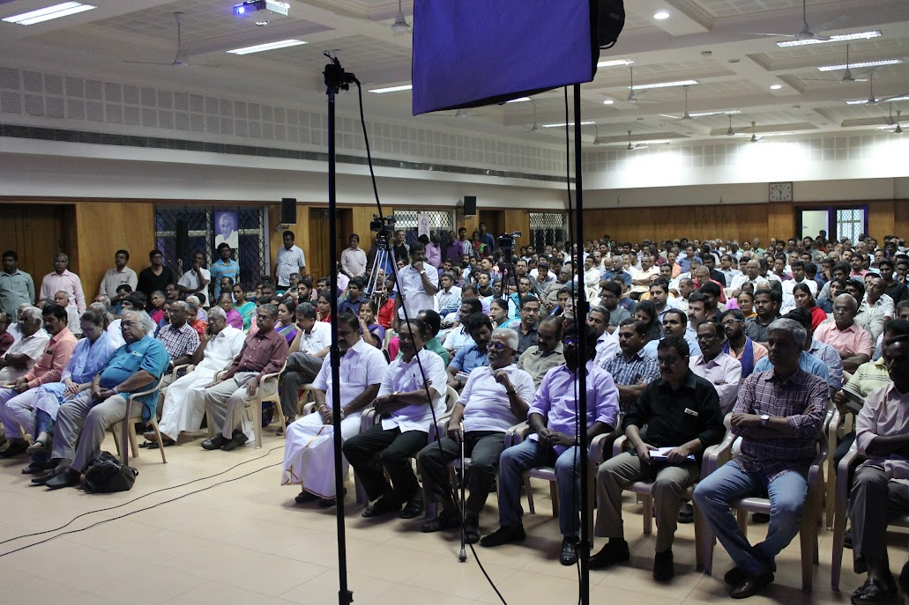
The formal ceremony ran from about 5:45 to 9:00 in the evening. It opened, fittingly for the date, with a Christmas carol from Jaan Sundar marking the birth of Christ, followed by a fifteen-minute excerpt from Nadiyin Paadal (“Song of the River”), a documentary on Vannadasan directed by Selvendran.
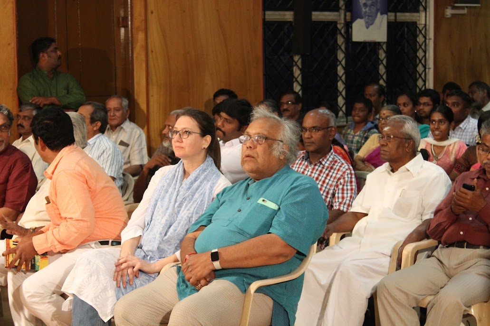
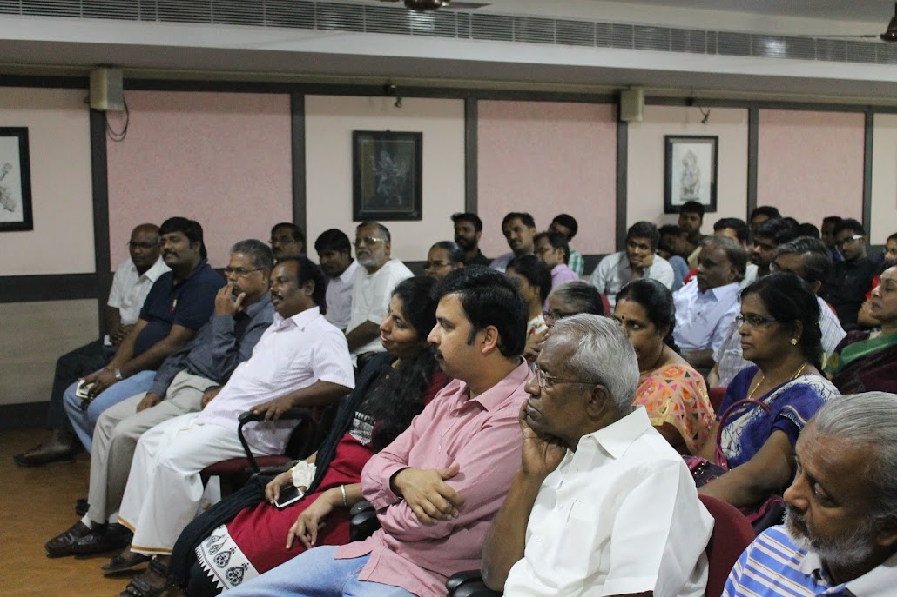
Several speakers then turned to Vannadasan's fiction in turn. The actor Nasar described first encountering his stories through a friend during his own years in theatre, and how one story in particular had stayed with him, almost like a recurring dream, long enough to reshape into film. Ra. Murukan offered a fuller critical reading, drawing out the distance between Vannadasan the author and Vannadasan the private individual. Dr. Ku. Sivaram spoke to the quiet humanity beneath Vannadasan's ostensibly domestic, everyday narratives, and the depth of feeling he found in his portrayals of the poor. Pava Sellathurai returned to the stage to show, through the same well-digging passage he had read the day before, how ordinary description in Vannadasan's stories can conceal real cruelty and real pain. Jeyamohan closed the tributes by likening Vannadasan's fictional world to a miniature painting seen by firefly-light — modest and unforced, yet unmistakably alight.
Vannadasan's own response was brief and personal: he described his stories as an outstretched hand reaching from somewhere deep within him toward his readers, and spoke of returning again and again to the many shapes love can take, each time finding some new way to say it.
Gold shawls were presented to several of the evening's speakers and critics — Nasar, H. S. Sivaprakash, Ku. Sivaraman, Pava Sellathurai and Ra. Murukan among them. Two publications marked the occasion: the documentary Nadiyin Paadal was formally released and received by Ram Kumar, IAS, while Thamiraparanam, the Circle's critical volume gathering readers' and writers' essays on Vannadasan's work, was received by Radhakrishnan.
Vannadasan was the seventh writer to receive the Vishnupuram Literary Circle Award, following A. Madhavan, Bhoomani, Devathacchan, Thelivathy Joseph, Gnanakoothan and Devathasan in the years since 2010. Once the formal programme ended near nine o'clock, readers stayed on around Vannadasan for photographs and conversation — an evening several later described as one they would not forget.
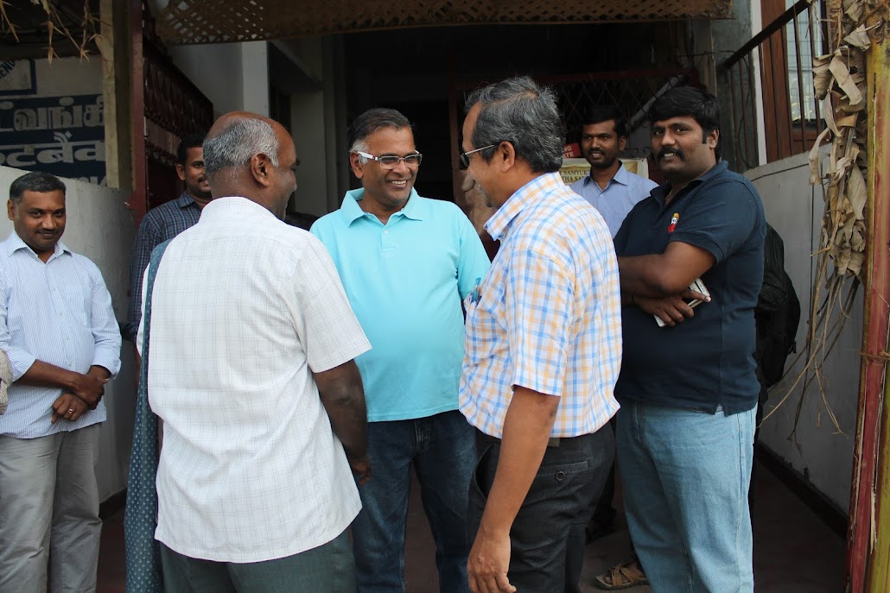
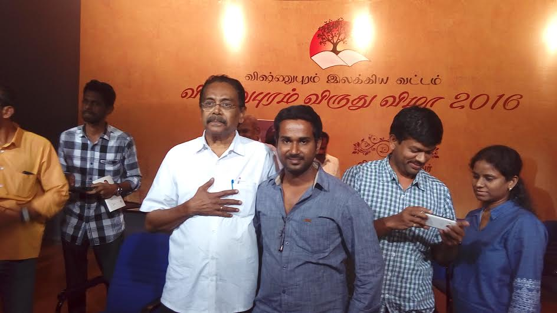
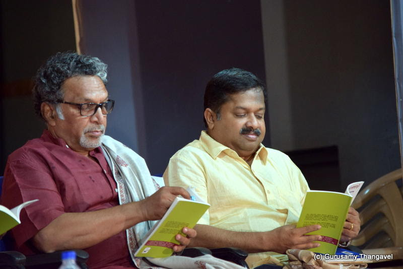
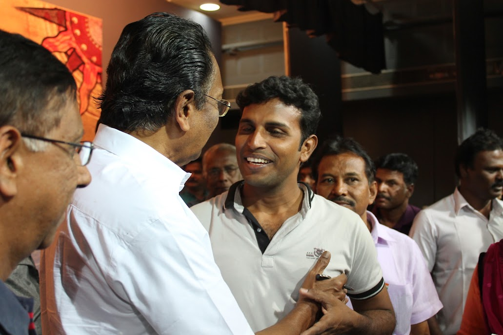
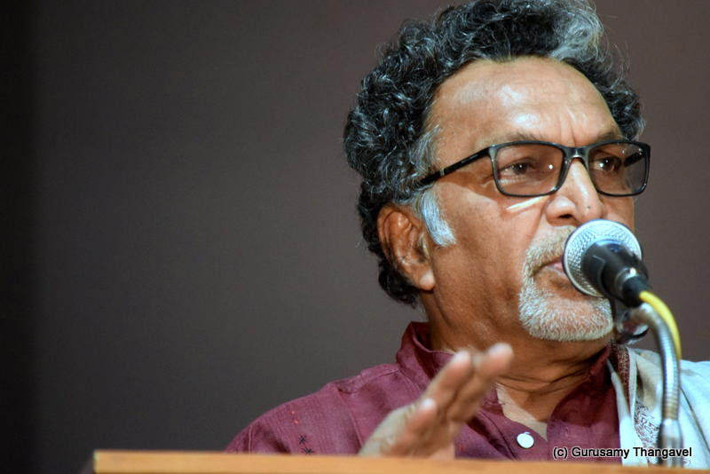
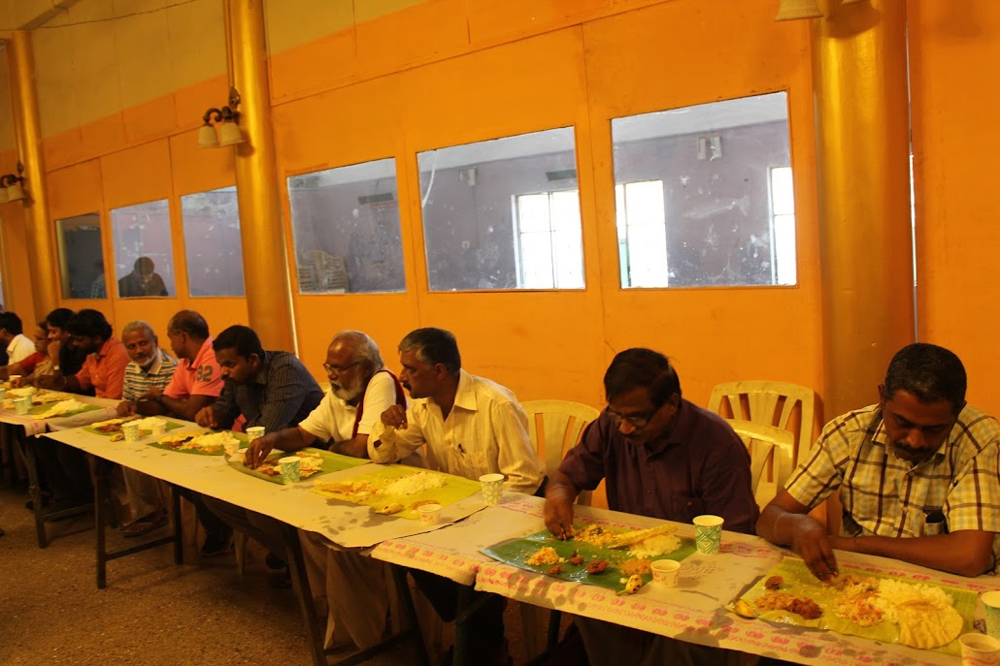
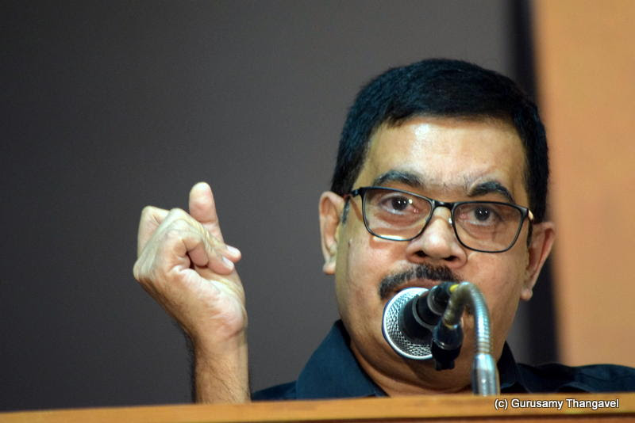
Translated and condensed from the original Tamil account: jeyamohan.in/93901 and jeyamohan.in/93576 · Watch highlights